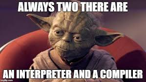
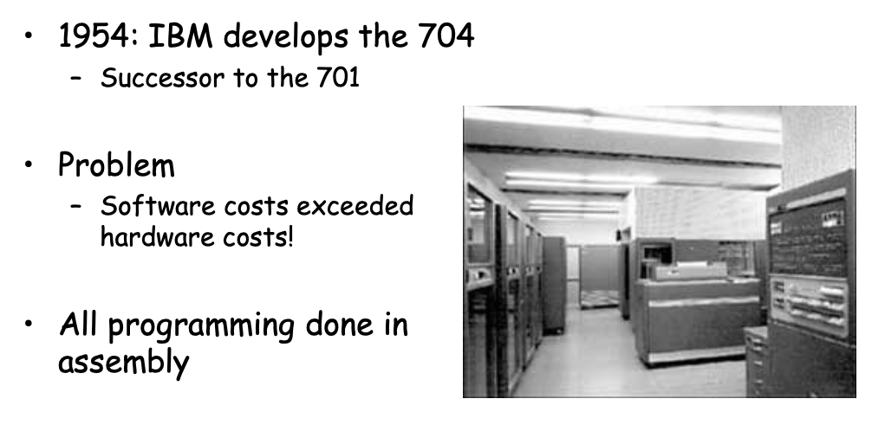
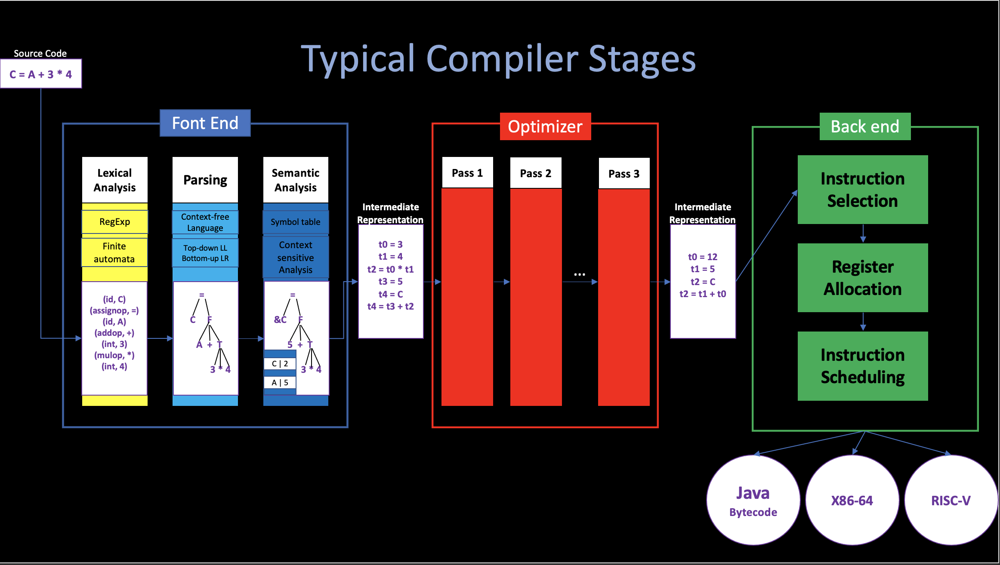

1. Introduction
By Angold Wang | 11/02/2022
1. Compiler
i. Overview

- Compilers translate your program
- Interpreters run your program

ii. Compiler History

In 1954, John Backus developed the first high-level language: FORTRAN (Formula-Translation)
Which translate high-level code to assembly, and the performance is close to hand-written assembly!
- Development time halved
- in 1958 >50% of all software is in FORTRAN.
iii. Compiler Structure
FORTRAN I is the first compiler, which brings huge impact on computer science (Many thought this is impossible). And modern compiers preserve the outlines of FORTRAN:
- Lexical Analysis
- Parsing
- Semantic Analysis
- Optimiaztion
- Code Generation
Today, the overall structure of almost every compiler adheres to this outline, but proportions are changed since FORTRAN:

iv. Compiler Economy
Why are there so many programming languages?
Application Domains have distinctive/conflicting needs.
-
Scientific Computing
- Good Floating-point support
- Godd Arrays
- Parallelism Example: FORTRAN / Matlab / R
-
Business Applications
- Persistance (Stable, Safe)
- Report Generation
- Data Analysis
- Example: SQL
-
System Programming
- Control of Resources
- Real-time constraints
- Example: C / C++
As you can see, what's important in one domain or most important in one domain is not the same as in another domain. And it is easy to imagine at least that it would be difficult to intergrate all of these into one system that would do good job on all of these things.
Why are there so many new programming languages?
An interesting claim:
Programmer training is the dominant cost for a programming language.
That leads three things:
-
Widely used languages are slow to change: We would expect the most popular languages, which will have larger and larger programmer basis, to become more and more ossified. To evolve more and more slowly.
-
Better and easier to start a new language: Since there are new application domains coming along all the time, instead of updating the widely-used languages, which is very hard and costs much as we metioned above, we better like to start a new language. Because you start with zero users and so there is essentially zero training cost at the beginning, the new language can evolve much more quickly to changing situations. And it's just not very costly to experiment with a new language at all.
-
New languages tend to look like old languages: Reduce the trainning cost, (Java versus C++)
What is a good programming language?
No "Perfect" Language, each of them has its own domain.
2. Typical Compiler Stages
Structure of a typical compiler
To reduce complexity, and create a more modular system. We divide the whole compiler into different stages, and each stages is the procedure of multiple passes.

The monolithic structure may be more efficient, and the multi-pass structure helps to reduce the complexity of the implementation, and it is relatively simple to debug, it also improves the flexibility, which means different combinations of optimization techniques can be used in different situations.
To make this abstraction more concrete, consider the steps required to generate executable code from the following expression:
C = A + 3 * 4
i. Lexical Analysis
Basically, the Lexical Analyzer transforms the input source char stream into the word stream of the given programming language (so called "token"), each token must classified into the a grammatical category.
For example, after the lexical analysis, the input source program becomes:
(identifier, C), (assign equal, =), (identifier, A),
(add, +), (integer, 3), (multiple, *), (integer, 4).
Nowadays, since we had a great understanding of the math concepts (Finite-automata) behind the Lexer (aka. Scanner) implementation. People design many tools in order to auto-generate Lexer by using the given Regular Expression.
ii. Parsing
Now, the parsing step is going to match the grammar of the input tokens.
Programming language constructs have recursive structure.
S -> A | ... ;
A -> E ASSIGN_EQUAL E;
E -> E + T | T ;
T -> T * F | F
F -> (E) | IDENTIFIER | INTEGER | OP ;
The language above is called Context-free Grammar, which can describe the grammar of given programming language. Not only we want to check whether the input tokens is in the grammar, but we also need to produce an output that represents a valid stream of tokens for future processes. The output is called Parse Tree, which describes the derivation steps, and it is enough for future pass. (From Button to UP)
iii. Semantic Analysis
Grammatically correct statements may be meaningless. Whether it has meaning depends on its context.
For example, think about the following two sentences in English:
Rocks are green vegetables.
Compilers are engineered objects.
Both of them use the same syntatic category token in the same order, but the previous statement has no reasonable semantics. To understand that statement, contextual knowledge about Rocks, Vegetables are required.
In the runtime of this pass, the compiler will maintain a symbol table, where stores the context of each variable, like their type, value, size, etc,. And the compiler will use that table to check whether each variable, function, class ... is used in compliance with its definitions.
Like in the C = A + 3 * 4 example, in this pass, the compiler will try to find the definition of variable A and C, and check their type and value. If all of them are valid in this context. then Compiler will come to the next stages.
iv. Optimization
The term "Optimization" implies that the compiler needs to find the optimal solution to a problem. But the problems that occur in the optimization process are so intricate and complex that these problems cannot actually be optimally solved.
The mordern optimizer is extremely complex, because there are a lot of things need to be concerned. The Optimizer are also divied into a lot of passes, each pass is responsible to deal with some optimizations. They read source IR and then output transformed IR.
In our example, to reduce the execution time, we can optimize the IR by reducing the number of lines, or the number of registers used. (assume A equal to 5 in this context).
t0 = 3 | t0 = 12
t1 = 4 | t1 = 3 + 12
t2 = t0 * t1 | t2 = 5
t3 = A =|=> t2 = t1
t4 = t3 + t2 |
t5 = C |
t5 = t4 |
v. Backend
The backend of the compiler will traverse the IR form of the code and output the code of the target machine (or interpreter).